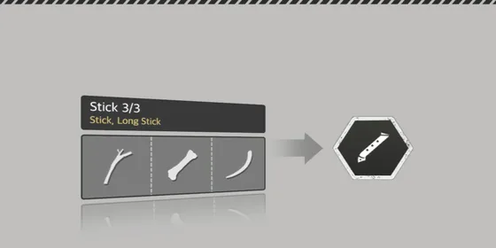
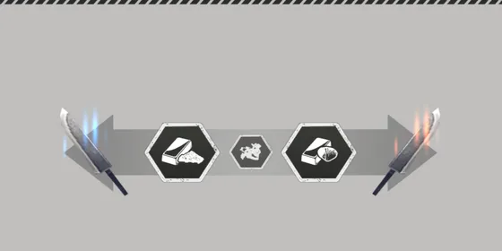

หน้าแรก › เก็บของและคราฟต์
 การคราฟต์ ใช้ได้
การคราฟต์ ใช้ได้
สร้างเครื่องมือ อาวุธ เสื้อผ้า และแปรรูปวัตถุดิบ — สูตร โต๊ะทำงาน โอกาสสำเร็จและล้มเหลว เลเวลผลงาน โอกาสแปรรูป และการขัดโลหะด้วยเปลือกหอย
ของที่เก็บมาได้ถูกนำไปสร้างเป็นเครื่องมือ อาวุธ เสื้อผ้า อาหาร และชิ้นส่วนสิ่งปลูกสร้าง · วัตถุดิบหลายอย่างต้อง แปรรูป ก่อน (ตัดแต่ง หลอม ฟอก ตากแห้ง …) ถึงจะใช้ในสูตรขั้นต่อไปได้ · เลเวลและคุณสมบัติของวัตถุดิบส่งผลถึงของที่ได้

ทำอะไรได้บ้าง
- สร้าง เครื่องมือ อาวุธ เสื้อผ้า กระเป๋า ยา ฯลฯ จากเมนูสร้าง
- แปรรูป วัตถุดิบ — ของชิ้นเดิมถูกปรับ (ได้ป้ายบอกว่าผ่านการแปรรูปแล้ว) เพื่อเข้าสูตรขั้นต่อไป
- ฝากทำที่โต๊ะทำงาน — วางงานไว้บนโต๊ะแล้วไปทำอย่างอื่น (การสร้างของแบบไม่ต้องมีผู้ดูแล)
- ทำอาหาร — ดู การทำอาหาร และ การถนอมอาหาร
- สิ่งปลูกสร้าง ใช้แผนผัง — ดู การก่อสร้าง
วิธีคราฟต์ ใช้ได้
- เปิดเมนู สร้าง แล้วเลือก สูตร ที่ต้องการ
- ใส่ วัตถุดิบ ลงแต่ละช่อง — ช่องจะบอกว่าต้องการของที่มีคุณสมบัติ/แท็กอะไรและระดับเท่าไร ของที่ไม่เข้าเงื่อนไขเลือกไม่ได้
- บางสูตรต้องยืนใกล้ โต๊ะทำงาน ที่ตรงชนิด หรือถือ เครื่องมือ ที่กำหนด
- รอหลอดเวลาจนเต็ม แล้วรับของ
- สูตรปลดล็อกได้จากการเรียน สกิล และบางสูตร/แผนผังปลดเองเมื่อ ทักษะในการสร้าง (ค่าคราฟต์) ของหมวดนั้นสูงถึงเกณฑ์ (บันไดความชำนาญ)
- ค่าคราฟต์ไม่บล็อกสูตร — ลองทำได้เสมอ แต่เป็นตัวกำหนด โอกาสสำเร็จ: หน้าต่าง ผลลัพธ์ที่คาด แสดง ระดับความยาก ของสูตร อัตราความสำเร็จ และอัตราความสำเร็จแบบไร้ที่ติก่อนกดสร้าง — เป็นตัวเลขเดียวกับที่เซิร์ฟเวอร์ใช้ทอยจริง
ตัวเลขหลัก ใช้ได้
| เรื่อง | ค่า |
|---|---|
| เวลาคราฟต์ปกติ | 2 วิ (สกิลลดได้ · ต่ำสุด 0.5 วิ) |
| เวลาแปรรูป | ตามสูตร ไม่เกิน 20 วิ |
| ความแข็งแรงที่ใช้ | 5 ต่อครั้ง |
| ความเหนื่อยล้า | คราฟต์ไม่เพิ่มความเหนื่อยล้า — «ลดความเหนื่อยล้าในการสร้าง» จึงยังไม่มีผล |
| โอกาสสำเร็จ | 100% เมื่อค่าคราฟต์ ≥ ระดับความยาก · ต่ำกว่านั้นลดลง — ดู โอกาสสำเร็จและล้มเหลว |
| ความสำเร็จแบบไร้ที่ติ | ปกติ 10% · บัพแล้วสูงสุด 30% — ดู โอกาสความสำเร็จแบบไร้ที่ติ |
| เลเวลของที่ได้ | ค่าเฉลี่ยเลเวลวัตถุดิบทุกชิ้น ปัดลง (ไม่เกินเลเวลสูงสุดของสูตร) |
| เลเวลของที่แปรรูป | เท่ากับชิ้นเดิม |
ความสำเร็จแบบไร้ที่ติ ได้ป้าย «ความสำเร็จแบบไร้ที่ติ» บนของ · ค่าทนทานสูงสุด +10% · สูตรแปรรูปให้คุณสมบัติที่เพิ่มขึ้น +1 ระดับ · ค่าประสบการณ์ ×1.5
ค่าประสบการณ์ ใช้ได้
คราฟต์แต่ละครั้งได้ค่าประสบการณ์หมวดสกิลของสูตรนั้น (การสร้างอาวุธ/เครื่องมือ · การตัดเย็บ · การทำอาหาร · การก่อสร้าง · การแปรรูป) ตามเลเวลของที่ได้เทียบเลเวลหมวด — ใช้ตารางเดียวกับ การเก็บของ · ล้มเหลวหนัก ได้ ครึ่งหนึ่ง (ค่าประสบการณ์ตัวละครก็ครึ่งหนึ่ง) · เควสคราฟต์ไม่นับ
โอกาสสำเร็จและล้มเหลว ใช้ได้
การคราฟต์ทุกครั้งทอยเทียบ ระดับความยาก ของสูตร (ดูได้ในหน้าต่างผลลัพธ์ที่คาด — ยิ่งเลเวลผลงานสูงยิ่งยาก) กับ ค่าคราฟต์ ของหมวดสูตรนั้น:
ส่วนต่าง = ระดับความยาก − ค่าคราฟต์ (เป็น 0 ถ้าค่าคราฟต์สูงกว่า)
โอกาสสำเร็จ = 1 − (ส่วนต่าง ÷ 100)²| ผล | โอกาส | เกิดอะไรขึ้น |
|---|---|---|
| สำเร็จ | 1 − (ส่วนต่าง ÷ 100)² | ได้ของ — อาจเป็นความสำเร็จแบบไร้ที่ติ |
| ล้มเหลว | (ส่วนต่าง ÷ 100)² − (ส่วนต่าง ÷ 100)³ | เกมแสดงเหมือนสำเร็จและได้ของ แต่ไม่มีความสำเร็จแบบไร้ที่ติ ไม่มีของแถม · อาวุธ เครื่องมือ เสื้อผ้า เครื่องประดับ เริ่มที่ความทนทาน 70% ของสูงสุด (ซ่อมกลับเต็มได้) · อาหารและวัตถุดิบไม่กระทบ |
| ล้มเหลวหนัก | (ส่วนต่าง ÷ 100)³ | เกมขึ้น «สร้าง … ล้มเหลว» · ไม่ได้ของ · วัตถุดิบเสีย ส่วนต่าง % ที่เหลือคืนกระเป๋า (ชิ้นเดิม) · ความแข็งแรงและเวลาที่ใช้ไปไม่คืน · ได้ค่าประสบการณ์ครึ่งหนึ่ง |
- อัตราคืนวัตถุดิบ — ขั้นบันไดความชำนาญของ 8 หมวดคราฟต์ให้อัตราคืน (+10% +15% +20% +30% ต่อขั้น): วัตถุดิบที่เสียตอนล้มเหลวหนัก × (1 − อัตราคืน) · คืนได้สูงสุด 90% · หมวดเพาะปลูกไม่มี
- ชิ้นที่เสียสุ่มเอา — ต่อช่อง จำนวน × สัดส่วนที่เสีย เศษที่เหลือเป็นโอกาสเสียเพิ่มอีก 1 ชิ้น
- สูตร ย้อมสีและฟอกสี ไม่ใช้ค่าคราฟต์ สำเร็จเสมอ · สูตรที่ไม่มีระดับความยากก็เช่นกัน
- ฝากทำที่โต๊ะทำงาน ทอยตอนวางงาน — ถ้าล้มเหลวหนักจะไม่มีงานวางบนโต๊ะ
- ก่อน 24 ก.ย. คราฟต์สำเร็จทุกครั้ง ตอนนี้ใช้สูตรต้นฉบับแล้ว
ตัวอย่าง
สูตรอาวุธ · ค่าคราฟต์ = ตัวเลขค่าคราฟต์ (เช่น «10» = ตัวละคร Lv10 ไม่มีโบนัส) · แต่ละช่อง = สำเร็จ · ล้มเหลวหนัก · วัตถุดิบที่เสียถ้าล้มเหลวหนัก
สูตรที่ระดับความยาก = 1 × เลเวลของ (ด้ามและใบมีดกระดูกบางสูตร)
| ค่าคราฟต์ | ของ Lv10 (ความยาก 10) | ของ Lv30 (ความยาก 30) | ของ Lv60 (ความยาก 60) |
|---|---|---|---|
| 10 | 100% | 96% · 0.8% · 20% | 75% · 12.5% · 50% |
| 30 | 100% | 100% | 91% · 2.7% · 30% |
| 50 | 100% | 100% | 99% · 0.1% · 10% |
| 60 | 100% | 100% | 100% |
สูตรที่ระดับความยาก = 1.75 × เลเวลของ (หัวขวานโลหะที่ปรับปรุงแล้ว ฯลฯ)
| ค่าคราฟต์ | ของ Lv10 (ความยาก 17.5) | ของ Lv30 (ความยาก 52.5) | ของ Lv60 (ความยาก 105) |
|---|---|---|---|
| 10 | 99.4% · 0.04% · 7.5% | 81.9% · 7.7% · 42.5% | 9.8% · 85.7% · 95% |
| 30 | 100% | 94.9% · 1.1% · 22.5% | 43.8% · 42.2% · 75% |
| 60 | 100% | 100% | 79.8% · 9.1% · 45% |
| 100 | 100% | 100% | 99.8% · 0.01% · 5% |
ก่อน 24 ก.ย.: สำเร็จ 100% ทุกช่อง ไม่เสียวัตถุดิบ · วัตถุดิบที่เสียในตารางยังไม่หักอัตราคืน
ค่าคราฟต์นับทุกแหล่ง ใช้ได้
ค่าที่ใช้ทอยคือตัวเลขเดียวกับที่หน้าตัวละครแสดง: สกิล · บันไดความชำนาญ · ฉายา · คุณสมบัติของไอเทม · บล็อกดัดแปลงของไอเทม · บัพอาหาร · บรรยากาศบ้าน · บันไดความชำนาญก็ใช้ตัวเลขนี้ — ขั้นที่ได้เพราะใส่ของไว้ ถอดของแล้วไม่ถูกยึดคืน · คุณสมบัติ «บัพทักษะในการสร้าง» บวกให้ทั้ง 9 ค่าคราฟต์ (ทักษะสร้างอาวุธ · ทักษะตัดเย็บ · ทักษะเย็บผ้า · ทักษะหัตถกรรม · ทักษะแปรรูปโลหะ · ทักษะทำอาหาร · ทักษะสร้างเฟอร์นิเจอร์ · ทักษะก่อสร้าง · ทักษะเพาะปลูก) · ดูเพิ่มที่ ค่าสถานะ
โอกาสความสำเร็จแบบไร้ที่ติ ใช้ได้
- พื้นฐาน 10% · ค่าคราฟต์สูงกว่าระดับความยากมาก ๆ ช่วยเพิ่ม — ทักษะสร้างอาวุธและทักษะตัดเย็บได้ถึงราว 17% · ทักษะสร้างเฟอร์นิเจอร์และทักษะก่อสร้างราว 13% · หมวดอื่นคง 10%
- บัพที่เพิ่มอัตราความสำเร็จแบบไร้ที่ติบวกเพิ่มจากนั้น — เช่น บรรยากาศบ้าน «ฤดูใบไม้ผลิที่หอมหวาน» +4% (10% → 14%) · รวมไม่เกิน 30%
- ล้มเหลวหรือล้มเหลวหนักไม่มีทางเป็นความสำเร็จแบบไร้ที่ติ
| ทักษะสร้างอาวุธ \ ความยาก | 5 | 15 | 30 | 45 | 60 | 105 |
|---|---|---|---|---|---|---|
| 100 | 10% | 10% | 10% | 10% | 10% | 10% |
| 150 | 14.5% | 13.5% | 12% | 10.5% | 10% | 10% |
| 180 | 17.4% | 16.2% | 14.4% | 12.6% | 10.8% | 10% |
ฝากทำที่โต๊ะทำงาน ใช้ได้
- สูตรที่รองรับ (เช่น หลอมแร่และขัดโลหะที่เตาเผา) วางงานไว้บน โต๊ะทำงาน ได้ — วัตถุดิบถูกหักทันที ของจะรออยู่บนโต๊ะจนครบเวลา
- เวลาฝากทำเป็นของแต่ละสูตร (อย่างน้อย 5 วิ) · โต๊ะของคนอื่นใช้ไม่ได้ถ้าเจ้าของไม่ให้สิทธิ์ · โต๊ะเต็มแล้วฝากเพิ่มไม่ได้
- โต๊ะที่สร้างจากวัตถุดิบคุณสมบัติ «แตกหักง่าย» อาจได้ «พื้นที่เพิ่มเติม» (+1 ช่อง) หรือ «ระยะเวลาสั้นลง» (เวลาฝากทำ −5%) ดู คุณสมบัติของไอเทม
แปรรูปวัตถุดิบ ใช้ได้

การแปรรูปไม่ได้เปลี่ยนเป็นของชิ้นใหม่ แต่เพิ่มแท็ก/คุณสมบัติให้ชิ้นเดิม แล้วสูตรขั้นถัดไปจะตรวจแท็กเหล่านั้น ตัวอย่างสูตรแปรรูป:
| สูตร | ใช้กับ | ผล |
|---|---|---|
| ตัดแต่งวัสดุ | กระดูก หิน ไม้ | ได้แท็กตัดแต่ง → ใช้ทำใบมีด/ด้ามได้ |
| แปรรูปวัตถุดิบด้วยการบีบอัด | ของที่ตัดแต่งแล้ว + น้ำ | ได้แท็กแปรรูป + คุณสมบัติเพิ่ม |
| สกัดแร่ | แร่ + ถ่าน | กลายเป็นก้อนโลหะ |
| แยกสารประกอบซัลเฟอร์ในโลหะ | ก้อนโลหะ + ถ่าน 2 + เปลือกหอย 2 | ได้ «ระดับความบริสุทธิ์สูง» |
| หนังตากแห้ง | หนัง / ขนสัตว์ | ได้ «ตากแห้ง» |
| ฟอกเส้นใย | หนังตากแห้ง + เปลือกไม้ + ใบไม้ | ฟอกหนัง · ลบกลิ่นเหม็น |
| กันน้ำ | หนัง / ผ้า + ไขมัน | ได้ «กันน้ำ» |
| ขยายสายรัด | เชือก 2 เส้น (เถา ด้าย เอ็นก็ได้) | ได้แท็กเชือกยาว → ทำสายธนูได้ |
| แผ่น | ท่อน/เสา | กลายเป็นแผ่น |
โอกาสแปรรูป ใช้ได้
- ของแต่ละชิ้นมี โอกาสแปรรูป 3 ครั้ง
- สูตรที่แสดงบรรทัด «โอกาสแปรรูปที่ใช้ไป» จะหัก 1 ครั้งจากชิ้นในช่องหลัก — มี 77 สูตร: สูตรแปรรูปเกือบทั้งหมด + สูตรสร้างปกติ 8 สูตร (ของที่ได้รับจำนวนครั้งที่เหลือ −1 ต่อจากชิ้นหลัก)
- การย้อมสีไม่หักโอกาสแปรรูป · การฟอกสี (ฟอกขาว) หัก 1 ครั้ง
- ครบแล้วแปรรูปต่อไม่ได้ — เกมแจ้ง «ของชิ้นนี้แปรรูปต่อไม่ได้แล้ว»
- การแก้ไขอุปกรณ์ใช้ช่องแก้ไขแทนโอกาสแปรรูป
ขัดโลหะด้วยเปลือกหอย ใช้ได้

สายทำโลหะบริสุทธิ์: แร่ → สกัดแร่ (แร่ + ถ่าน) → แยกสารประกอบซัลเฟอร์ในโลหะ (ก้อนโลหะ + ถ่าน 2 + เปลือกหอย 2) → ก้อนโลหะได้ «ระดับความบริสุทธิ์สูง»
- ระดับของ «ระดับความบริสุทธิ์สูง» เท่ากับเลเวลชิ้น — ใบมีดโลหะขั้นสูงและด้ามธนู/หน้าไม้โลหะ 17 สูตรขอระดับ 35 หรือ 55
- «กันน้ำ» (สูตรกันน้ำ) และ «ตากแห้ง» (สูตรตากแห้ง) ใช้กฎเดียวกัน
- ของที่ขัดไว้ก่อนการแก้ไขนี้ใช้ได้ทันทีโดยไม่ต้องทำใหม่
คุณสมบัติที่ส่งต่อ ใช้ได้
วัตถุดิบใน ช่องหลัก ส่งคุณสมบัติต่อให้ของที่คราฟต์ได้ (มีโอกาสหลุดทุกขั้น) — รายละเอียดที่ คุณสมบัติของไอเทม
ฉายาที่มี «อัตราคุณสมบัติที่แฝงอยู่/หายาก» คูณโอกาสที่คุณสมบัติแต่ละตัวส่งต่อด้วย (1 + ค่าของฉายา) — เช่น +30% ทำให้โอกาส 30% กลายเป็น 39% · ไม่เกิน 90%
ซ่อม
เครื่องมือและอาวุธสึกเมื่อใช้งาน ซ่อมด้วยเครื่องมือซ่อมหรือ T Stone — ดู การผุพังและการซ่อม
เคล็ดลับ
คราฟต์กับแอ็กชันอื่นทำพร้อมกันไม่ได้ ใช้ได้
เริ่มแอ็กชันที่มีหลอดเวลาอื่น (เช่น เก็บของ ล้างตัว) ระหว่างที่รอคราฟต์ = การคราฟต์นั้นถูกยกเลิก วัตถุดิบไม่ถูกใช้ · การสร้างอัตโนมัติ ที่ฝากไว้บนโต๊ะงานช่างไม่เกี่ยว ทำงานต่อเอง · กฎเต็มดูที่ การเก็บของ